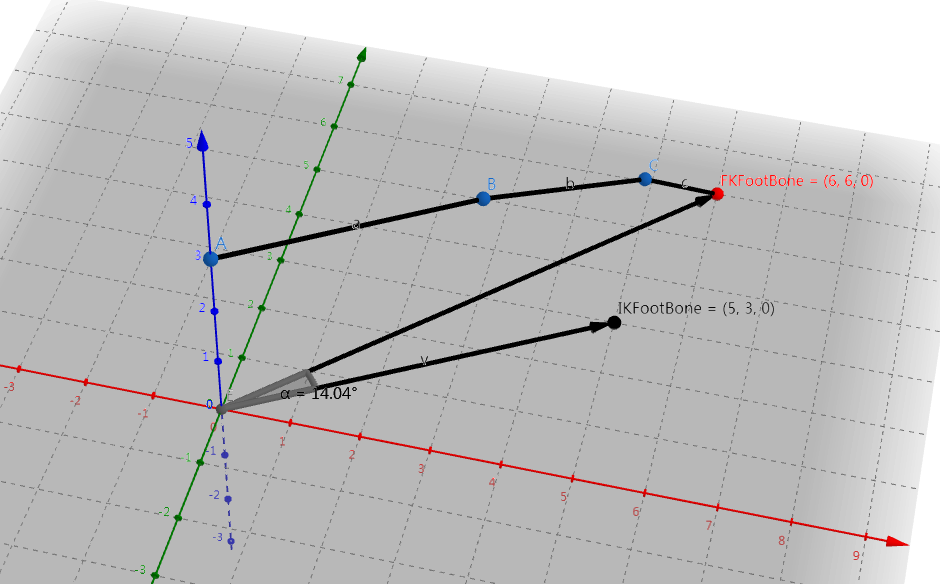
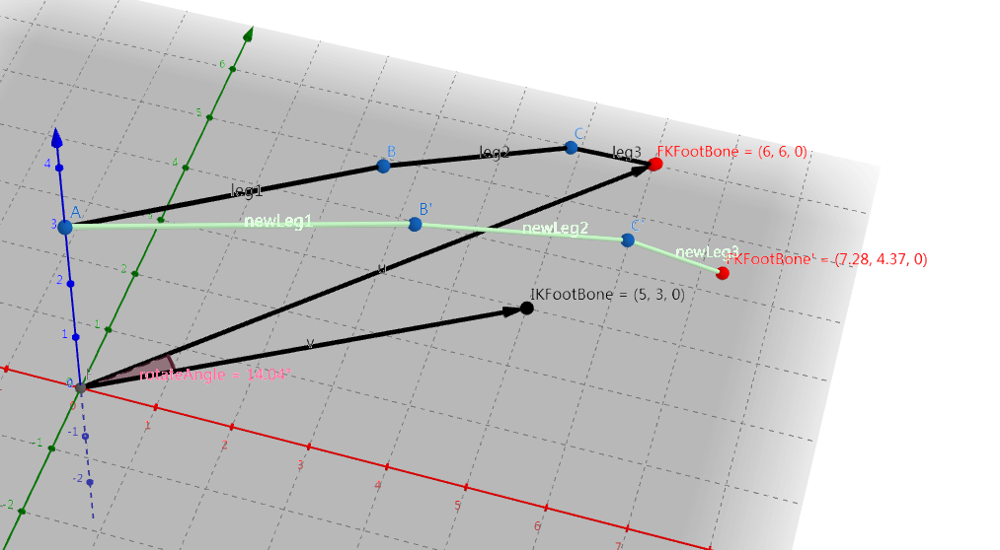
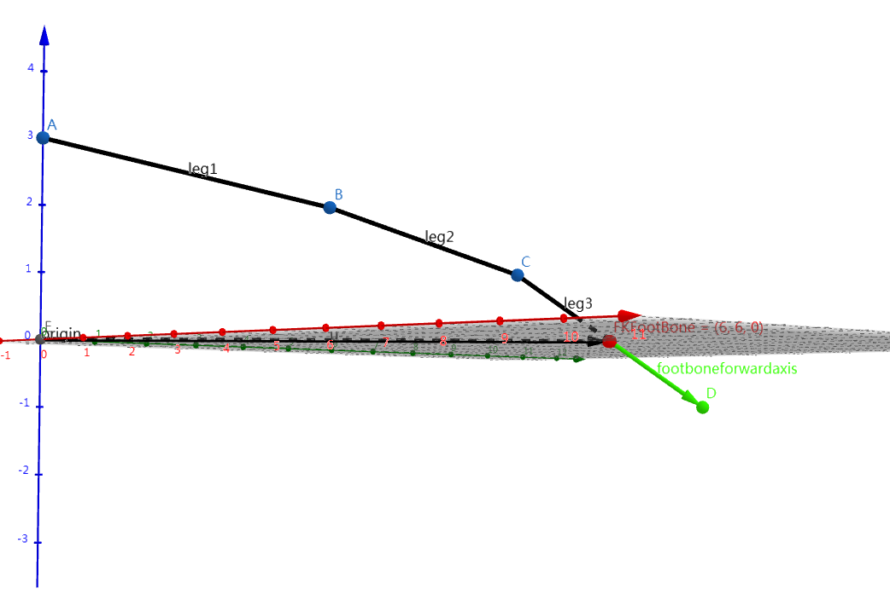
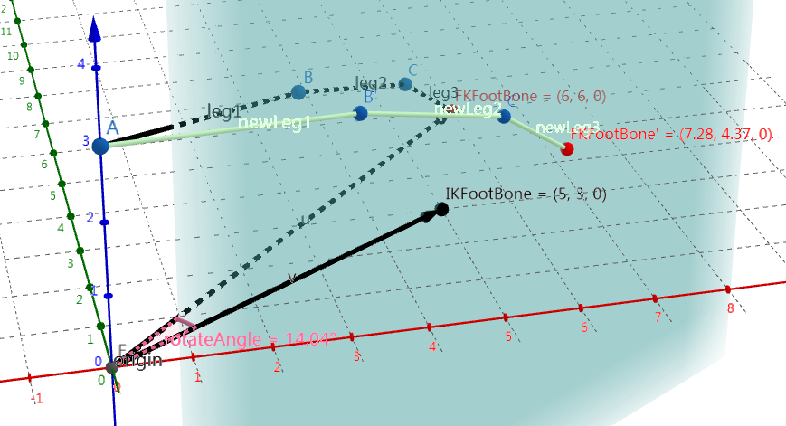
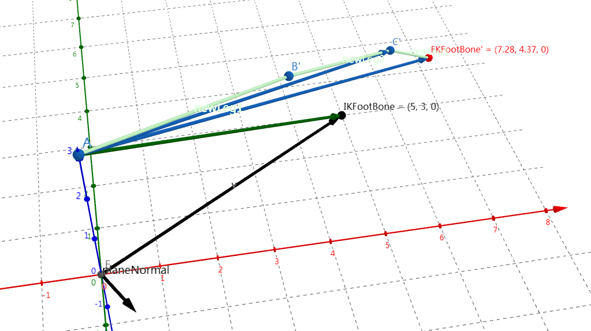
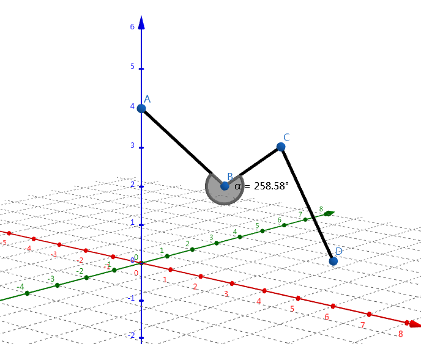
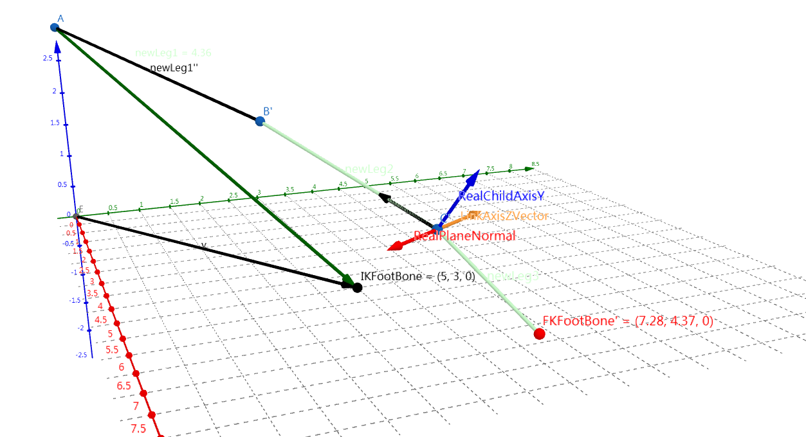
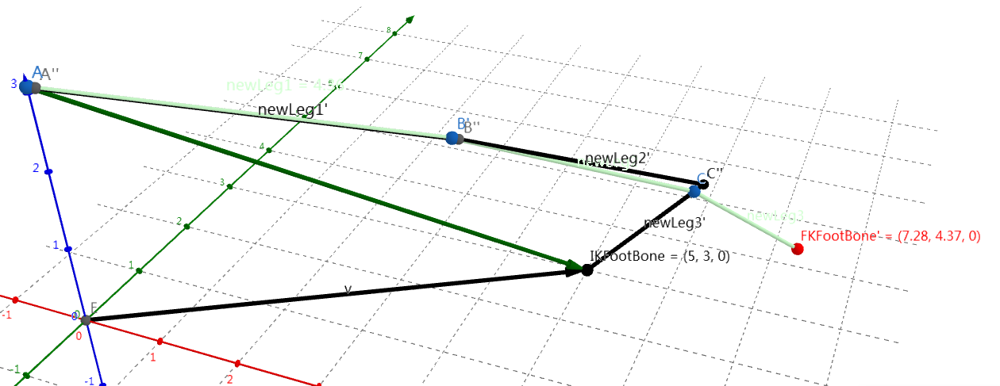
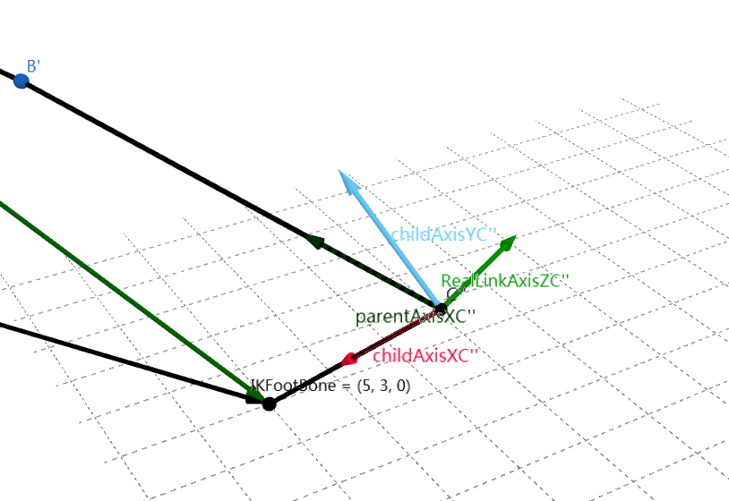
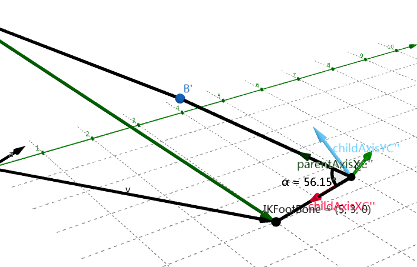

It seems that Leg IK has been existed in UE4 for quite a long time, and it seems necessary to dig into the code and try to understand what is going on underneath.
And btw, it seems to be very convenient to use geogebra to draw 3D diagrams. This article would use diagrams created by this website.
Leg bones
Since this node is designed for multi-bone legs IK calculation, but how does it handle multi-bone legs? CCD or FABRIK? Or some other black magic?
1 | void FIKChain::ReachTarget(const FVector& InTargetLocation, float InReachPrecision, int32 InMaxIterations) |
It is easy to tell that for a three-bone(thigh->leg->foot) leg, this solver would eventually fallback to a simple two-bone IK.
But as for a leg that has more than 3 bones(spider leg or octopus leg), it would perform a FABRIK. Since I’ve already wrote a blog about FABRIK on csdn and I am not going to rewrite it again.
How does Leg IK work?
You can define your legs in this node. Each leg can be defined using FKFoot Bone and Num Bones in Limb, which defines a leg from toe to hip.
And you need an IKFoot Bone in your skeleton if you want to use this node. And during evaluation, this node would try to put your toe(in another word, FKFoot Bone) to the IKFoot Bone.
!
let’s check out the whole algorithm:
- Leg transforms would firstly be aligned with the ik target. Delta normal is calculated between
InitialDir(From Hip to FootFKLocation)andTargetDir(From Hip to FootIKLocation).

- After being aligned with
IKFoot Bone, try to reach for ik effector. EitherTwo bone IKorFABRIKis used for this purpose. For aTwo bone IK,Hinge Rotation Axisis used for bending direction, and for aFABRIK,Min Rotation Angleis used for rotation limit, if enabled. - Knee twist would be adjusted if
Enable Knee Twist Correctionis checked. You need to define theFoot Bone Forward Axisfor this feature. This axis is used for determining how much angle the foot has been twisted. ByBone Forward Axisit means the axis pointing to the ground.

Rotation limit for FABRIK
Something still needs to be done for constraints in FABRIK, when used for leg ik calculation. And hence we would go through those extra work here.
Plane normal&LinkAxisZ
Since we have just mentioned that legs would be aligned to the target effector, thus bone rotation limits are calculated in a 2-D space.

First thing that needs to be done is to get a valid plane normal for the whole leg.
By traverse vectorA->B', A->C' and A->FKFootBone' until we get a valid cross product result with vector A->IKFootBone.

After getting a valid plane normal, we still need a valid LinkAxisZ vector for each leg bone. The reason is that sometimes we may have a leg inner angle larger than pi.

In this case, we need to flip plane normal, and this is what LinkAxisZ do during limiting rotation, See LinkAxisZVector in the following image:

Apply rotation limitation
For a simple FABRIK without rotation limitation, the whole leg would loot like this after a forwardpass:

As for a leg, it looks terrible. Thus we need to apply rotation limit to it. Rotation limit is applied after each bone’s reaching stage, both forward and backward.
Let’s take a look at bone C'' rotation limit as an example:
- First
childAxisYC''is calculated using a cross product betweenLinkAxisZandchildAxisXC'', which point fromC''to its child bone.

- Then dot product between
parentAxisC'', which points fromC''to its parent bone, andchildAxisXC''andchildAxisYC''is calculated. By this we could get thecosandsinvalue of current angle. We use this to determine whether current angle has already reached the limit.

If the
sinvalue if less than0(which means the the leg inner angle is larger thanpiand the leg needs to be flipped), or thecosvalue is larger than thecos(MinRotationAngleRadians)(which means that the angle has already reached the angle limit), a rotation limitation should be performed. The current angle in the image above is56.15degrees, and ourMinRotationAngleRadiansis 60 degrees, which is larger than current degree.As a result, we need to apply rotation limitation now. Since this is a
forward reach pass, we need to adjust the parent bone location by code like this:1
ParentLink.Location = CurrentLink.Location + CurrentLink.Length * (FMath::Cos(IKChain.MinRotationAngleRadians) * ChildAxisX + FMath::Sin(IKChain.MinRotationAngleRadians) * ChildAxisY);
And here is the result.
Some extra work
There is still some extra work that this anim node does for a better effect.
Distribute pull to re-position limb
The relevant code is:
1 | // Re-position limb to distribute pull |
There is a CVarAnimLegIKPullDistribution(Console variable a.AnimNode.LegIK.PullDistribution), whose default value is 0.5f.
And this value means whether we care more about the foot, or the hip.
As a result, the bone in the whole leg seems to move a delta offset.
But RootTargetLocation is totally the same as Links.Last().Location:
1 | const FVector RootTargetLocation = Links.Last().Location; |
So what are you exactly trying to do?
Average pull
The relevant code is:
1 | // Pull averaging only has a visual impact when we have more than 2 bones (3 links). |
To be honest, I truly have no idea how pull averaging eventually work somehow(cannot find any paper about it). Nor do I know why does pull averaging only has a visual impact when we have more than 2 bones.
If average pull is enabled, instead of modify the original location directly, forward and backward pass would be stored separately in two FIKChain. The final location would be the average value of the forward and the backward value.
Can it be better?
- Currently there is only a
MinRotationAngleRadiansfor us to control the leg constraint. But aMaxRotationAngleRadiansshould always be concerned. - It would be much better if we can set the
MinRotationAngleRadiansandMaxRotationAngleRadiansfor each joint.